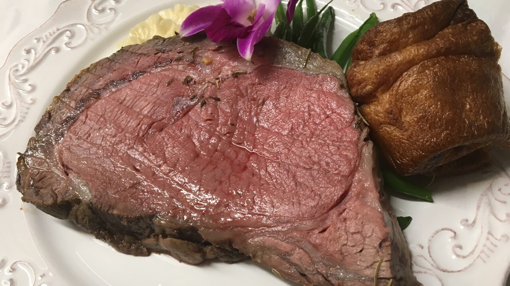

Rib

Description
This is a specific formula for achieving a perfectly pink prime rib cooked somewhere a shade under medium rare. To use this method you must have a full-sized, modern oven with a digital temperature setting that indicates when it is preheated. Older ovens with manual controls can vary greatly, and the doors may not have the proper insulation.
Ingredients
- 1 (10 pound) prime rib roast
- 6 cloves garlic, sliced
- salt and ground black pepper to taste
- ½ cup Dijon mustard
Steps
- Preheat the oven to 500 degrees F (260 degrees C).
- Make slits all over the roast by pricking with a small knife. Insert slivers of sliced garlic. Season the roast with salt and pepper, then spread generously with mustard. Place on a rack in a roasting pan, and cover.
- Roast for 60 minutes in the preheated oven. Turn off oven. Leave oven closed, and do not peek for 90 minutes. The internal temperature of the meat should be at least 140 degrees F (60 degrees C) for medium-rare, or 155 degrees F (68 degrees C) for medium.